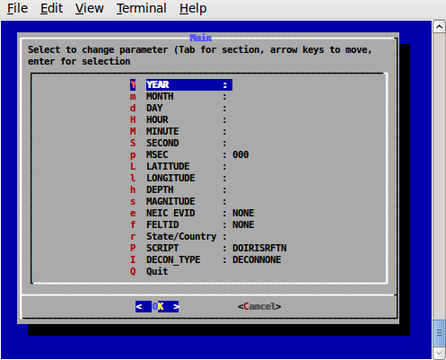

R. B. Herrmann, December 4, 2011
Saint Louis University Earthquake Center
This is a detailed tutorial on how to determine teleseismic P-wave receiver functions. All steps are described in detail, and sample data sets are provided in Section 3.
You can go directly to Section 3 to perform the processing if you already know how to get SEED volumes for your data set.
A PDF version of this page can be obtained by download the link rftntut.pdf
Note that the inversion of receiver functions is described in another tutorial.
This example will use the Wilber II web page http://www.iris.edu/dms/wilber.htm to select the earthquake and seismograms.
We will look for larger earthquakes that have a very sharp P-wave arrival in the 30° to 90° hypocentral distance range. The reason for this requirement is that at shorter distances the upper mantle triplication causes arrivals from rays with different ray parameters in the normal P-wave arrival interval. At larger distances we worry about interference with the PcP arrival.
The initial web page look like that in Figure 2.1:
|
|
|
Fig. 2.1. Initial Wilber II page |
After selecting the time window and search radius, click on the earthquake(s) of interest. Here we are interested on an earthquake near Nicaragua. After clicking, we get Figure 2.2. We will select the earthquake on 2011/11/07.
|
|
|
Fig. 2.2. Earthquake selection page. |
The next page gives a list of recording networks (Figure 2.3). We will select the NM (New Madrid) and TA (Transportable Array) networks by clicking in the appropriate box. After selecting the networks, scroll to the bottom of the page and click on the box marked “Proceed” to take us to Figure 2.4.
|
|
|
Fig. 2.3. Selection of networks providing waveforms. |
|
|
|
Fig. 2.4. Selection of stations. |
At this stage the stations of the selected networks are organized by default in order of increasing distance. To further refine the selection, I will select the Channel “B??”, the Distance from 30 to 35 deg and then “Apply Filter”. You will note that many boxes no longer have the selection mark “√” There will now be just 123 stations selected. (note for the data set included with this tutorial, only 10 stations will be selected so that the SEED volume is small in size). After selection scroll to the bottom to set the time window, data format and request name (Figure 2.5). You will see that we only select the time window that would have the P wave, and that we wish to receive a full SEED volume.
|
|
|
Fig. 2.5. Selection of time window and unique identification for the requested SEED volume. |
Be careful that proper channels are selected.
After clicking on the “Process Request” button, the request will be processed by the IRIS DMC. If the amount of data requested is small, the response will be rapid. The initial display screen indicates the request submitted (Figure 2.6).
|
|
|
Fig. 2.6. Request submitted to the IRIS DMC. |
When the request is completed, the following screen will be seen (Figure 2.7):
|
|
|
Fig. 2.7. Completion of request. |
Now click on the link, which will take one to the FTP directory for download. We see the following (Figure 2.8):
|
|
|
Fig. 2.8. FTP download page: |
Recall that our request was names “20111107” and the the User ID was RBHerrmann. We see that the SEED volume is named “20111107.seed”. From the browser “right click” to “Save link as” to download the file to the local machine.
For this tutorial “right click” and then “Save link as” the following two files: 20111107.seed and rftn.tgz
Unpack the “rftn.tgz” file using the command:
gunzip -c rftn.tgz | tar xvf -
The result of unpacking will create a new directory with name “RFTN” and contents similar to the following:
RFTN
├── 0XXXRFTN
│ ├── DORFTN1
│ └── DORFTN2
├── DOIRISRFTN
├── DOISETUPRFTN
├── DOMAP
├── DOSETUPRFTN
├── PROTO.I
│ ├── IDODEC
│ ├── IDODIST
│ ├── IDOEVTNONE
│ ├── IDOEVTPZ
│ ├── IDOEVTRESP
│ ├── IDOGCARC
│ ├── IDOMERGE
│ ├── IDOQC
│ ├── IDOQCTEL
│ ├── IDORAWQC
│ ├── IDOROTNONE
│ ├── IDOROTPZ
│ └── IDOROTRESP
└── rftn.sh
Before we start processing, we must locate shell interpreter “bash”
rbh> which bash
/bin/bash
Now examine the first line of the file “rftn.sh” using the command
rbh> head -5 rftn.sh
#!/bin/bash
#####
# this program interactively asks for the input to run
# DOCWBREG or IDOREG
If the location of “bash” shown the first line of “rftn.sh” does not agree with the result of the “which” command, then edit the “rftn.sh” to make them the same.
We are now ready to determine the receiver function using the SEED volume that we downloaded above.
Before processing we require the hypocentral parameters of the earthquake. For the example used here we have the following information:
DATE TIME SOURCE MAG LAT LON DEPTH DESCRIPTION 2011/11/07 22:35:27.2 SPYDER® 5.9 11.63 -85.80 183.40 NICARAGUA
The processing will be initiated by a script “DO” /until you can edit and existing “DO” script, you will use the menu program “rftn.sh” to correctly enter the information to make the DO script, so at the prompt, enter the command
rbh> rftn.sh
where the “rbh>” is the shell prompt.
The program rftn.sh is a shell based menu system built upon the dialog program, which is installed as part of Computer Programs in Seismology. By using keys, one can select an entry. Then use the ENTER key to enter a sub-menu, where you can enter the parameter (note that you cannot cut-and-paste to make entries.
The initial menu is show in Figure 4.1. Figure 4.2 shows the sub-menu for entering the year. Figure 4.3 shows detail on the entry for the deconvolution type (DECON_TYPE), and Figure 4.4 shows the fully completed menu. When the cursor in on the “Q” or “OK” and you hit the ENTER, the file “DO” will be created.
|

|
|
Fig. 4.1. Initial menu. |
Figure 4.2 shows the sub-menu for entering the year.
|
|
|
Fig. 4.2 Sub-menu for entering the year. After the proper number is entered, finish using the ENTER key. |
|
|
|
Fig. 4.3. Sub-menu for DECON_TYPE |
|
|
|
Fig. 4.4. Completed menu |
The selection of the deconvolution method provided three choice: the use of the pole-zero response file obtained using the command (DECONPZ)
rdseed -f 20111107.seed -p -d -o 1
or the RESP file (DECONRESP)
rdseed -f 20111107.seed -R -d -o 1
and no deconvolution (DECONNONE).
When performing a moment tensor inversion or when determining an inter-station Greens function, the instrument response must be removed. However if the instrument response is the same for all three components, which is true for modern instruments, and if we wish to obtain a receiver function, no deconvolution is required and the DECONNONE is a adequate option. Use this if you are note certain about the correctness of the instrument response files.
The resultant “DO” file created is the following:
#!/bin/sh
#####
# valid regions
# REG Region FELTID VELOCITY_MODEL
# PK Pakistan ous WUS (to 69 km deep)
#####
# Command syntax:
#DOCWBREG YEAR MO DY HR MN SC MSC LAT LON DEP MAG REG NEIC FELTID STATE/COUNTRY DECON_TYPE
#####
DOIRISRFTN "2011" "11" "07" "22" "35" "27" "200" " 11.6300" " -85.8000" "183.4" " 5.90" "RFTN" "NONE" "NONE" "Nicaragua" "DECONNONE"
When comfortable with the format of the DO file, this can be edited using any editor.
Now execute the command “DO”
rbh> DO
This command creates subdirectories and copies all processing files to the proper location. Fro this example an event directory with name 20111107223727 is created and the following contents:
20111107223527/
├── 20111107223527
│ ├── DORFTN1
│ ├── DORFTN2
│ ├── evt.proto
│ ├── IDODEC
│ ├── IDODIST
│ ├── IDOEVT
│ ├── IDOEVTNONE
│ ├── IDOEVTPZ
│ ├── IDOEVTRESP
│ ├── IDOGCARC
│ ├── IDOMERGE
│ ├── IDOQC
│ ├── IDOQCTEL
│ ├── IDORAWQC
│ ├── IDOROT
│ ├── IDOROTNONE
│ ├── IDOROTPZ
│ ├── IDOROTRESP
│ ├── MERGE
│ ├── MFT
│ ├── Orig
│ ├── Sac
│ └── toadd
├── html.tmp
└── VMODEL.used
The screen output of the “DO” command is the following:
-----------------------------------------------------------------------
To complete the processing perform the following steps:
01: Place the full SEED volume in the directory /backup/rbh/PROGRAMS.310t/PROGRAMS.330.fixups/RFTN/20111107223527/20111107223527
cp SEED_VOLUME /backup/rbh/PROGRAMS.310t/PROGRAMS.330.fixups/RFTN/20111107223527/20111107223527
02. UNPACK the SEEDFILE as follows
cd /backup/rbh/PROGRAMS.310t/PROGRAMS.330.fixups/RFTN/20111107223527/20111107223527/Orig
rdseed -f ../SEED_FILE -p -R -d -o 1
You may have to enclose the name in quotes for this to work in the shell
03. Return to the top level directory where you started:
cd /backup/rbh/PROGRAMS.310t/PROGRAMS.330.fixups/RFTN
04. enter the command:
DOFINISHRFTN
05. Review the results are in the directory
/backup/rbh/PROGRAMS.310t/PROGRAMS.330.fixups/RFTN/20111107223527/20111107223528/RFTN
you can use gsac to view these files
-----------------------------------------------------------------------
In this example, the PATHS are specific to the local machine. If you run this example, the paths will be modified in the part before RFTN.
Following this example, we place the SEED volume file “20111107.seed” in the sub-directory indicate by instruction 01. Next we unpack the SEED volume in the Orig sub-directory as indicated by instruction 02 using the command
rdseed -f ../20111107.seed -p -R -d -o 1
This command unpacks the SEED volume, creates the pole-zero files “-p”, the RESP files “-R” and Sac binary data files “-d -o 1”
Finally we return to the top level (Instruction 03) and then run the final script DOFINISHRFTN .
The DOFINISHRFTN script performs the following steps:
First go to the Orig directory and connect trace segments into a single file for each channel. The results are placed into the sub-directory named MERGE. This is necessary since some telemetry transmission,receiving systems may not connect the files into a single continuous data stream. This is performed using the IDOMERGE script.
Next the merged data files in the directory MERGE are examined for data quality. This is necessary because there could be data gaps in the original data stream, and such traces MUST NOT be used for analysis. Figure 4.5 shows the interactive screen.
To apply the quality control (QC), just click, using any mouse key, on a trace that does not have data gaps and which has a clear signal. You must click on all components. When you click there will be a red '+' sign plotted at the left side of the trace window. If you make a mistake, you can hit the 'r' key to reject. You can go to a previous page by entering 'b'. Figure 4.5 shows the selection make.
After you are done, enter 'n' to go to the next page.
Note that if the LH channels were included, this is the first chance that you will have to NOT use these files. If you enter 'r' or do nothing, these files will not be used.
The result of this operation is that the selected Sac files will be placed into the Sac sub-directory.
Next the original data files are deconvolved using the pole-zero or response files, or not deconvolved, according to the original menu selection for this example, there is no deconvolution. This work is by the script IDOEVT which is created from the IDOEVTNONE, IDOEVTPZ or IDOEVTRESP prototypes. The resulting waveforms are placed in the sub-directory GOOD.
The script IDOROT (created from the IDOROTNONE, IDOROTPZ or IDOROTRESP prototypes) rotates the traces into a vertical (Z), radial (R ) or transverse ( T) coordinate system with respect to the great circle path. The resulting rotated waveforms are placed in the sub-directory FINAL
The script IDOGCARC examines the waveforms in the FINAL sub-directory and copies those with great-circle arc distances between 28 and 95 degrees to the Sub-directory FINALRF.QC
Now the script DORFTN1 is run for the final QC before the receiver function determination. A good set of traces has the P-wave motion on the Z and R traces.
The interactive screen can be used to reject a set of traces by entering the 'r' key to reject a trace – you must reject all.
In addition this is the time to pick mark the P-wave arrival. Use the two 'x' entries to expand the trace (the '+', '-'. 'o' and 'space' can be used to reposition the trace). To select the P-arrival move the cursor to a point just prior to the P-wave arrival and hit the 'p' on the keyboard. You will see a P marker on all three traces displayed. (Figure 4.6).
Hit 'n' to go to the next page.
Continue this until there are no more traces to process.
Finally the DORFTN2 script is run to compute the receiver function.
|
|
|
Fig. 4.5. Sample screen for the raw quality control screen. |
|
|
|
Fig. 4.6. Result of running DORFTN1 showing the P-wave first arrival pick. |
The sub-directory RFTN contains the compute receiver functions. For this example these files are as follow:
R.M38ABHZ20113112235.0.5 R.N59ABHZ20113112235.2.5 T.M54ABHZ20113112235.1.0
R.M38ABHZ20113112235.1.0 R.O33ABHZ20113112235.0.5 T.M54ABHZ20113112235.2.5
R.M38ABHZ20113112235.2.5 R.O33ABHZ20113112235.1.0 T.N35ABHZ20113112235.0.5
R.M39ABHZ20113112235.0.5 R.O33ABHZ20113112235.2.5 T.N35ABHZ20113112235.1.0
R.M39ABHZ20113112235.1.0 R.O34ABHZ20113112235.0.5 T.N35ABHZ20113112235.2.5
R.M39ABHZ20113112235.2.5 R.O34ABHZ20113112235.1.0 T.N36ABHZ20113112235.0.5
R.M40ABHZ20113112235.0.5 R.O34ABHZ20113112235.2.5 T.N36ABHZ20113112235.1.0
R.M40ABHZ20113112235.1.0 R.T25ABHZ20113112235.0.5 T.N36ABHZ20113112235.2.5
R.M40ABHZ20113112235.2.5 R.T25ABHZ20113112235.1.0 T.N59ABHZ20113112235.0.5
R.M54ABHZ20113112235.0.5 R.T25ABHZ20113112235.2.5 T.N59ABHZ20113112235.1.0
R.M54ABHZ20113112235.1.0 T.M38ABHZ20113112235.0.5 T.N59ABHZ20113112235.2.5
R.M54ABHZ20113112235.2.5 T.M38ABHZ20113112235.1.0 T.O33ABHZ20113112235.0.5
R.N35ABHZ20113112235.0.5 T.M38ABHZ20113112235.2.5 T.O33ABHZ20113112235.1.0
R.N35ABHZ20113112235.1.0 T.M39ABHZ20113112235.0.5 T.O33ABHZ20113112235.2.5
R.N35ABHZ20113112235.2.5 T.M39ABHZ20113112235.1.0 T.O34ABHZ20113112235.0.5
R.N36ABHZ20113112235.0.5 T.M39ABHZ20113112235.2.5 T.O34ABHZ20113112235.1.0
R.N36ABHZ20113112235.1.0 T.M40ABHZ20113112235.0.5 T.O34ABHZ20113112235.2.5
R.N36ABHZ20113112235.2.5 T.M40ABHZ20113112235.1.0 T.T25ABHZ20113112235.0.5
R.N59ABHZ20113112235.0.5 T.M40ABHZ20113112235.2.5 T.T25ABHZ20113112235.1.0
R.N59ABHZ20113112235.1.0 T.M54ABHZ20113112235.0.5 T.T25ABHZ20113112235.2.5
The naming convention is that the first character, 'R' or 'T', indicates whether this is the P-wave receiver function for the radial or transverse component. For a plane-layered velocity model and no noise, the 'T' should be zero. If it is not small this indicates that the original data were bad, or that the structure is not plane-layered and isotropic.
The next part of the file name gives the station and component, the year, the day of the year, hour and second.
The end of the file indicates the Gaussian filter parameter, e.g., 0.5, 1.0 or 2.5. The Gaussian filter is a low-pass filter, and these correspond to roughly 0.2, , 0.3 and 1.0 Hz corner frequencies. I typically use 1.0 and 2.5.
To compare the receiver functions, just do the following with gsac (GSAC> is the gsac command prompt – you just enter the commands to the right of the prompt.
GSAC> r RFTN/R*.1.0
GSAC> fileid name
GSAC> xlim b b 40
GSAC> p
The plot is shown in Figure 4.7.
[To make this plot, I used the following commands with the non-CPS format conversion programs from GraphicsMagick or Image Magick:
GSAC> r RFTN/R*.1.0
GSAC> fileid name
GSAC> xlim b b 40
GSAC> bg plt
GSAC> p
and then
plotnps -F7 -W10 -EPS -K < P001.PLT > t.eps [P001.PLT is created by gsac which will indicate the name of the file created]
gm convert -trim t.eps example.png [if using Graphicksmagick]
or
convert -trim t.eps example.png [if using ImageMagick]
|
|
|
Fig. 4.7. Plot of P-wave radial component receiver functions. |
The red line on the receiver function indicates zero lag. For simple structures, this should be at the center of the first pulse. Experience with synthetics created using hrftn96 will give an idea of what is acceptable.
If you get the help command for saciterd or saciterdc you will see that the USER5 field in the Sac header indicates a percentage fit. For these files, we have:
GSAC> lh user5
RFTN/R.M38ABHZ20113112235.1.0 (0):
USER5 84.51762
RFTN/R.M39ABHZ20113112235.1.0 (1):
USER5 97.66653
RFTN/R.M40ABHZ20113112235.1.0 (2):
USER5 89.4223
RFTN/R.M54ABHZ20113112235.1.0 (3):
USER5 97.16866
RFTN/R.N35ABHZ20113112235.1.0 (4):
USER5 91.47628
RFTN/R.N36ABHZ20113112235.1.0 (5):
USER5 92.93056
RFTN/R.N59ABHZ20113112235.1.0 (6):
USER5 95.67019
RFTN/R.O33ABHZ20113112235.1.0 (7):
USER5 94.02173
RFTN/R.O34ABHZ20113112235.1.0 (8):
USER5 92.43146
RFTN/R.T25ABHZ20113112235.1.0 (9):
USER5 81.5244
The meaning of this parameter is as follows. Given the original vertical 'Z' trace and a low pass filtered version of the radial component 'R', the receiver function is the filter which predicts the low-pass filtered radial trace. The “fit” is an indication of the ability of this filter to predict the low-pass filtered radial trace. In this case the RFTN/R.T25ABHZ20113112235.1.0 fit the lowest. If you have a large number of receiver functions, then you can just use those with at least a 90% fit.
A second editing take place during the inversion for Earth structure when the criteria would be whether the receiver function is compatible with synthetics for a flat-layered velocity model.